Visibility Chance
A Game of Chance
Running with an identical format to the year prior, this group was even larger than the last due to there now being 4 year groups taking part in the project. Each group had to design a short
game and create an Arduino controller alongside it that you could play the game on.
Much like the year before, each student made their own level and we came together to create our controller and the design of our game. Groups were decided by topics
voted for by the students during classes. With our topic, the player is trying to promote their "game" and is given the choice between different cards in each level. By using
rng to change the cards before each choice, the outcome will either be a positive or negative boost to the game's visibility.
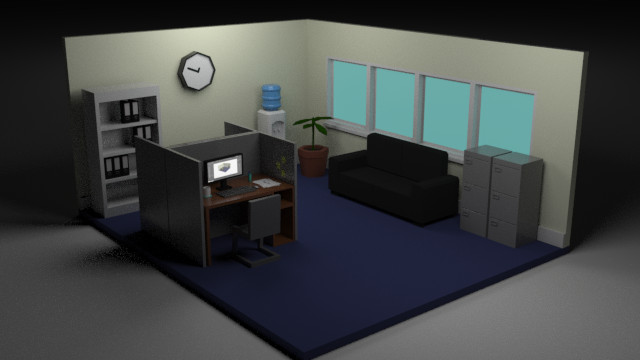
Genre: Decision Making/RNG
Engine: Unity
Development Period: 8 Weeks
Platform: PC
Art Direction
Inspiration - Main Menu
My level was inspired by the topic we were given of the "Games Industry". I made a low poly 3d office and since I was looking at pixel art I created pixel UI for the game too.
For the office, I wanted a very simple and low-poly style as I felt that this would be the most efficient style for modelling within the time limit for this project, so that I could
ease the workload of the students in the years below I would be designing and modelling the main menu myself as well as my own level. I began creating a Moodboard
of different low-poly offices to draw inspiration from. I really like the idea of having a small diorama for the Main Menu.
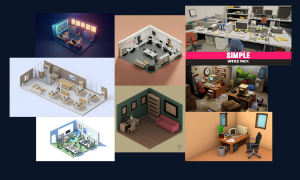
An Inspiration Board that I created.
Main Menu - UI
For the UI Design for my scenes, I really wanted to try out some pixel art, I had only tried pixel art once before in 2nd year and I hadn't done any since. I had found a
newfound admiration for pixel art at this point in time as I had been consuming a lot of pixel art content on Youtube, learning about it. I watched a few channels such as
Brandon James Greer, Saultoons, Overlord Pixel and a few others which all gave me massive inspiration. With some of their videos being tutorials I had learned a few things about
different techniques and colours to have a basic understanding of pixel art.
With my small amount of recently learned knowledge, I began trying to create letters for the Main
Menu UI.
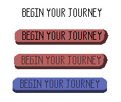
Starting off with a very simple text style, I would create a box of pixels that was 5x12 and then delete necessary pixels to create the letters, the 5x12 box ensured that the pixels
were uniformed in their size.
Depending on how large I wanted the text to be would depend on the size of the box I would use for each letter, but I tried to keep the scale the same expanding from 5x12. I then began working on a button, which
I changed from red to blue so that it would tie in more with the colour scheme of the office environment that I had created. This is also the reasoning that I made the background for my UI an off-yellow,
as it was similar to the walls of the office.
These were the remaining pieces of UI that I created for the Main Menu.
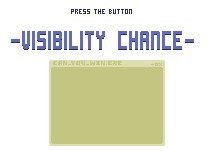
This was the final result of the Main Menu.
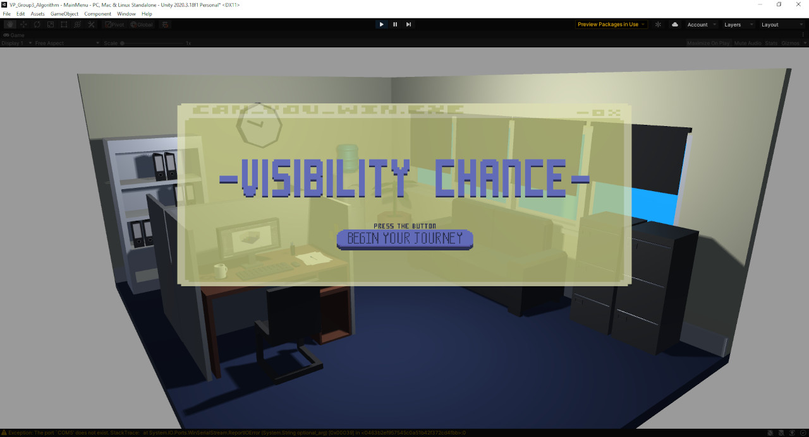
I played around with Opacity values as I didn't want the background to draw too much attention away from the menu or vice versa. I feel that the values that I chose in the end
complimented each other well.
Inspiration - My Level
My level was inspired by halloween themed things and my cards were themed with Trick or Treat to fit the aesthetic.
For the Mansion, like the Office in the Main Menu, I created a couple of moodboards to help me get some inspiration for how I was going to design it. One of the boards used old haunted looking mansions
from real life and the other focused more on small 3D dioramas of haunted mansions, to aid me in visualising and creating supporting models for the Haunted Mansion and it's environment. Again like the Office
scene, the Mansion would be low-poly to keep all of my scenes in the same style.
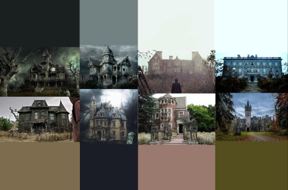 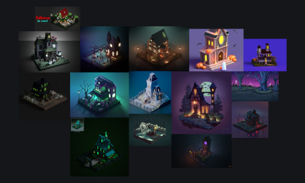
When concepting the Mansion, since it had helped me create my sprites for my Trick or Treat cards, I followed the same sort of process that I did for the Mansion as I did for them. I started with a
very rough sketch until I had a general idea that I was happy with, then I created a refined sihouette, then refined the linework, then I added simple colour and shading to
finish it off!
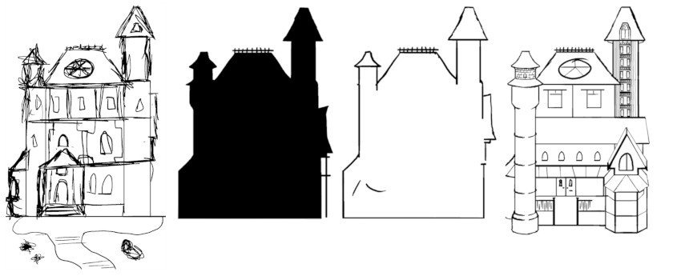
This was the final outcome of the Mansion Concept and then of my environment for my level in the project.
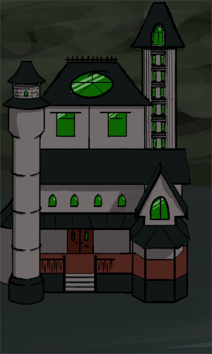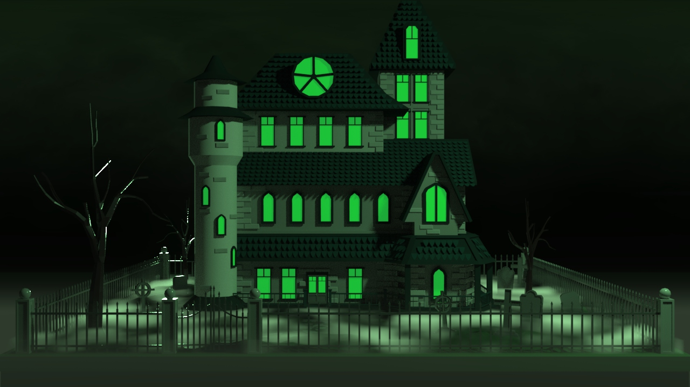
The Cards
With the Halloween Aesthetic in mind for my level, I wanted to have Trick or Treat as my theme for the positive and negative card, perhaps having something scary on the
Trick card and sweets on the Treat card. I took to the website Lospec, which is an online pixel art tool, and I browsed for some colour palettes that other users had created and posted.
I found two which i really liked and felt they would suit my cards, Carver6 by user beachboogeyman for my pumpkin basket and I used Ghost Town Palette by user Kaiburn for the
Trick card which I decided would be a ghost.
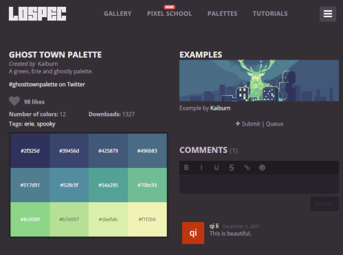 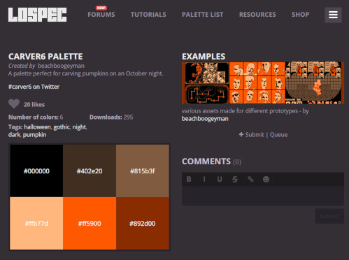
Ghost and Bucket Palette
With these colour palettes I began to create the pixel art for the cards. From the videos I had watched I decided that 32x32 would be a good size for the pixel art on the cards, using a method I had seen to create
pixel art which began with a silhouette, then line work, then colour and finally shading. This is the process that I used to create the Sprites for the Trick or Treat cards, using reference images to help with
shape and design.
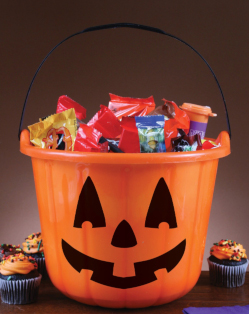
Ghost and Bucket Reference
This was the creation process for the Ghost and Bucket.
 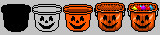
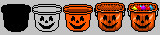
With my sprites finalised I moved onto creating the cards that they would be placed upon. For the shape and colour palette I followed the same process that I had done for the backdrop of the UI, having 2 tones of the same colour
, having a more desaturated colour for the text to sit upon so that it would contrast against it and be legible.
Originally, the base colour of the card that I chose was purple, as it is a colour that I associate with Halloween so it tied in with my theme. I created the Treat card first with the orange bucket and I felt it tied
together nicely as they are also complimentary colours. However when I went on to create the Trick card, I quickly noticed that I wasn't feeling the mix of the 3 colours between orange, purple and green.
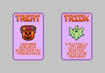
Since the Treat card was designed first, I really liked the simplicity of the card since it was just 2 colours, I believed that it tied in well with the low-poly style the rest of the project had so far. However when
looking at the Trick card it seemed very noisy by comparison with it having 3 colours. After some thinking and some tinkering with different colours, I reworked the cards to be Monochromatic, this turned out much better
than the original card design as it perfectly separated the Trick and Treat card from each other and also kept everything simple. This also allowed the player to quickly identify and separate the Trick cards from the Treat
cards as well!
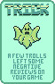 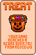
For the back of the cards, using some reference images that I had found, I tried to recreate something detailed and nice that was still legible within the restricted pixel size of the card itself. I liked the idea
of having a decorative border for the edge of the card with some form of pattern. I was quite easily able to create a simple border and design for the centre of the card that I was happy with, however I had many iterations
of trying to design a pattern for the card, but after many unsuccessful iterations I settled on a much more simplistic design that didn't take away from the centre or border of the card.
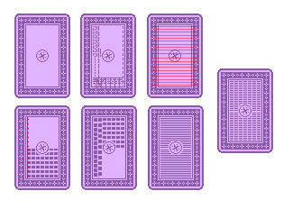
As seen above, I tried to space out dots and dashes in different ways in order to create a nice design for the back, however I could never create one that was symmetrical or one that worked
well within the confines of the card's size, the spacing was always off. This is what led me to dialling the design back and decided to try and see what having small dashes for the back would look like. In the end it turned
out a lot better than I had thought it would have and I realised I had been overcomplicating it.
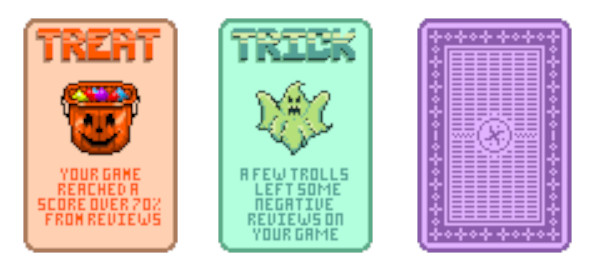
This is the final outcome for the cards.
Unity Implementation
The Arduino
For the Arduino, we had originally planned to create it using a NFC Card Reader as that would tie in with our mechanics and visuals very well as both would feature cards. Since the first few weeks are spent learning
what the project and brief will be through lessons, creating the idea for the game and mechanics comes after this, so the timescale for the actual project is quite short, maybe 4 - 5 weeks in total and even then, every
student still has 2 other larger projects to work on simultaneously.
With this short amount of time, when it came to coding and creating the Arduino Controller, a third year student and myself spent the better part of 4 hours trying to get the card reader to work but to no avail. We had
to quickly think of another possible solution that would work with cards and fit the design of our project and that we would be able to get working quickly so we could work on other aspects of the project.
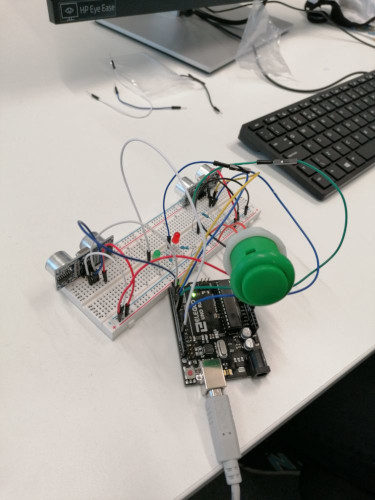
This was our Arduino Controller.
We decided to use 2 Ultrasonic Sensors and coded it so that whenever there was a motion between 0-15cm it would send a True value to the respective card. This would then trigger the animation in the game, rotating
the chosen card around, showing if it was a good or bad card and then affect the Visibility Slider either positively or negatively based on the card that they chose.
LEDs were used on the board as well, to help give the player feedback on whether the choice was positive or negative by lighting up either a Green or Red LED to represent positive or negative
respectively. The button allowed the player to continue to the next set of cards and also move through to the next level whenever they were prompted to do so.
Since we were using motion sensors, we brought in actual playing cards as a sort of gimmick to help demonstrate what it would've looked like while using the NFC Card Reader while we showed a demo of the project to
the other year groups.
Early WIP of our Game Build Arduino Controller Test Demonstration
Self-Reflection
Areas that I believe that I did well on during the process of this project;
These are some areas that I believe I could improve upon.
© All rights reserved
{kind=link}
{kind=link}
{kind=link}
{kind=link}
{kind=link}
{kind=link}
{kind=link}
{kind=link}
{kind=link}
{kind=link}
{kind=link}
{kind=link}
{kind=link}